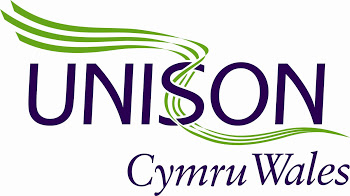

Celebrating the heritage and history of radicalism at the birthplace of the red flag
May 22nd until 28th 2017
Get TicketsWhat to expect in 2017
Following the success of Merthyr Rising in 2016, we're promising to bring you something even bigger and better in 2017. Our aim is to make Merthyr Rising Wales's leading town centre arts and ideas festival.
More Music
This year will include a full weekend (3 days) of incredible live music on the Unison Stage between Friday 26th May and Sunday 28th in Penderyn Square.
Thought Provoking Talks and Debates
This year we're introducing a new and improved venue to host what promises to be the most remarkable series of talks since the festival began.
Creative Workshops
Merthyr Rising will be working with a team of the most talented local creatives who will be running workshops accessible to anyone throughout the entire week of the festival.
Much more for the family
Expect more for the family in 2017, especially for the kids. Entertainment will include rides, face painting, street performance and much more.
Wales' Best Street Food and Beer
We promise to bring the tastiest grub, beer and beverages to Merthyr Rising in 2017. We've already secured the official ‘World's Best Beef Burger’ from the famous Beefy Boys and many more are already on board and ready to serve you some amazing street food.
Radical Art, Theatre and Film
As expected we'll be showcasing the very best in local and radical arts, theatre and film. Stuff that will not only entertain and intrigue but empower visitors to the festival.
This years festival is proudly sponsorerd by Unison
Early Bird Tickets Now Available
You can access the whole festival in 2017 for only £20. However we're offering a 25% discount for the first 300 tickets bought before January 31st 2017.
At what other festival of this quality can you get a weekend of entertainment, talks and performance for such a low price?
Buy Tickets Now